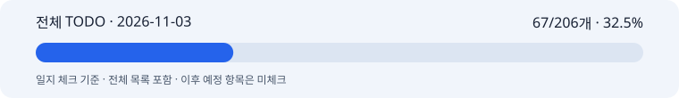

일지 체크 67/206개 · 32.5% · 제품 완성률과 구분
2026-11-03 박지수 협업일지
1. 날짜·이름·팀명
2026-11-03 · 박지수(pi) · 고급프로젝트 2팀. 이미지 API 래퍼·제품 보존·배경 연출·최종 합성을 담당한다. 오늘 확인한 작업을 19:28 KST 기준으로 정리했다. 정확한 작업 시작 시각은 미확인이다. 이전 날짜의 기록과 수치는 보존한다.
2. 오늘의 역할과 구체적인 작업
목표는 광고 참고와 사용자·팀원 리뷰를 반영해 테마별 결과를 비교하고, 프리셋과 비용 측정의 다음 기준을 만드는 것이었다.
- 구도·색·소품·질감·조명·서체를 구분해 6테마를 시험했다. 초기 결과와 R/E 수정 방식을 비교하고, 수정한 R2 6장을 기존 이미지 모듈로 실측했다. R은 원본 제품 사진·광고 참고·수정 프롬프트로 새 생성, E는 이전 생성 이미지·제품 원본을 함께 넣어 편집하는 방식이다.
- R2는 호출 6회·동시 6·재시도 0, 전체 52.908초였다. 입력과 출력 총 45,851토큰, 공식 단가 추정 $0.555493이다. 실제 청구는 미확인이다.
- 과거 24건과 실측 6건의 이력 30건, 테마 6행, 기계 리뷰 24행, 인간 피드백 3행을 W&B에 나누어 기록하고 원격 재조회로 확인했다. 이 30건은 해당 비교 묶음이며 프로젝트 전체 호출 수가 아니다.
- R2 기반 프리셋 6종을 로컬 구현했다. 버전·요청/프롬프트 해시·호출 전 미리보기 6개와 관련 294개 시험을 확인했다. 미커밋·미푸시 상태이며, 새 범용 프리셋으로 실제 생성하거나 다른 제품을 시험하지 않았다.
- FinOps의 사용량·전송 경계·공통 예산·비용 비교·한국어 보고를 로컬 보완했다. 당시 전체 2,030개 시험 PASS와 이후 R2 관련 294개 시험은 범위와 시점이 달라 합산하지 않는다. FinOps 코드도 게시·배포 전이다.
- 노션 회의록의 고도화 7개, 추가 프리셋, 미래 계획 3개를 공유 TODO에 대조했다. 새 유료 호출이나 제품 코드 푸시 없이 이번 기록을 정리했다.
전체 TODO 일지 체크: 67/206개 · 32.5%. 제품 완성률이나 오늘 신규 완료 수가 아니다. 실제 구현 원본의 고정 커밋 096053eafacb6a77796126364f37fba3f2b8e593을 한 번만 집계했다. 미게시 WIP와 별도 고도화 목록은 분자·분모에 더하지 않았다.

전체 TODO · 전체 목록 HTML · 데이터 · 마일스톤 · 7개+추가 기능 · 검증 근거
3. 오늘 작업 완료도
잠정 75%. 본인 자기평가가 없어 문서 작성자가 둔 잠정값이다. 비교 실험·측정·W&B 기록·로컬 프리셋은 진행했지만 코드 게시, 다른 제품 검증, 정식 개발셋, 서비스 반영과 인수는 남았다. 전체 TODO 32.5%와 별개다.
4. 협업 제안·피드백
사용자는 고정 A 배치에 묶이지 않고 높은 완성도를 찾고, Vita B·잡티로즈쎄럼 및 실제 화장품 광고를 평가 참고로 삼도록 요청했다. 비슷한 톤 반복과 서체 변주 부족을 보완하는 방향으로 테마를 나눴다. Goldfish 리뷰는 독립 비평 자료이며 전체 제품 인수나 손·글자·라벨의 자동 합격 판정으로 쓰지 않았다.
사용자·팀원은 T4~T6의 제품이 두꺼워 보인다고 피드백했다. 두께를 얇게 만드는 문제가 아니라 원본 폭·길이·캡 비율을 유지하는 문제로 정리했다. 사용자가 R2를 선호한 사실과 원형 보존의 최종 합격은 구분했다. CTA는 사용자 지정 ‘새로운 색상 보러가기’로 시험했으나 11자라 기존 팀 MVP 10자 합의와 다르다. 운영 적용 전 Text와 맞춰야 한다.
다혜님은 한국어 카피·규제 검수를 맡고 이미지 쪽은 결과를 받아 쓴다. 의미 단위 개행과 사용자 무드 원문을 유지한다. 노션의 7개 중 글자 수, 이모티콘, 비율, 다운로드, 수정·재개는 각 담당과 공동 검증이 필요하다. 문서 게시와 팀원 실제 전송·수신·수락은 다르며 이번에는 직접 메시지를 보내지 않았다.
5. 인사이트·문제
API 성공·테스트 통과·사용자 선호만으로 원형 보존을 보장할 수 없다. T6의 하단 좁아짐·둥근 바닥, 인물 손, 작은 글자·라벨은 검토를 남겼다. 한 제품의 6테마 실험은 서로 다른 5제품×2조건 평가가 아니다. 직접 이미지에 타이포그래피를 생성한 실험은 운영의 분리 합성·승인 계약을 교체하지 않는다.
공개 모듈의 헤드600/서브2000/CTA600자 상한과 합성 영역 overflow 검사는 합의한 15/25/10자 차단과 다르다. 이미지만 반환하는 모듈 능력도 UI 다운로드 완료와 다르다. 3:4·9:16과 이모티콘 지원 역시 인수 전이다.
W&B 비교 프로젝트는 PRIVATE이다. 링크만으로 익명 열람이 되지 않으며 팀원 권한 확인이 필요하다. 과거 24건 비용은 미확인으로 보존했다. 추정 생성당 비용 1.216849052% 감소는 저장 이력 20건/10쌍 비교값이며 실제 청구 절감이나 채택 광고당 전체 제작원가가 아니다.
6. 일정·협업의 어려움
오늘까지 일별 마일스톤은 3/11 전체 확인·8개 부분 완료다. 11/03 목표인 고정 설정의 개발 10결과가 없으므로 미체크로 남긴다. 11/04 이후 계획도 미리 체크하지 않는다. M1 공동 인수와 M2 품질·FinOps·서비스/사용성 인수는 남았다.
노션은 우선 7개, 프리셋 추가, 복수 시안·인페인팅·로그인 미래 계획으로 구분했다. 각 담당의 최신 서비스 상태를 전체 재조사하지 않았으므로 ‘미확인’을 ‘미구현’으로 바꾸지 않았다. 코드 게시와 통합 일정은 별도 조율 대상이다.
7. 발표·커뮤니케이션 기여
R/E/R2/E2 정의, 6테마 비교, 사람·기계 리뷰, 측정 시간·사용량·추정 비용을 묶어 설명할 자료를 만들었다. W&B 이력·테마 비교와 FinOps 보고를 원격 재조회로 검증했다. 고도화 7개와 담당 경계, 완료·로컬·미확인 상태를 공개 가능한 요약으로 정리했다.
원본 사진·생성 이미지·원본 요청·비밀값·로컬 절대 경로는 공개 Git에 올리지 않는다. 오늘은 실제 발표·공동 서비스 시연·GCP 배포 인수를 확인하지 않았다.
8. 다음 목표
- R2 프리셋·FinOps 로컬 코드를 별도 검토·게시 대상으로 준비한다. 이번 문서 게시와 섞지 않는다.
- 고도화 7개의 소유 담당과 계약을 맞춘다. 우선 카피 15/25/10자 차단, 이미지 단독 다운로드, 비율·이모티콘 지원 범위를 명확히 한다.
- 고정 개발셋과 독립 검증셋, 2인 판정으로 제품 형태·라벨·색/재질·손·카피 가독성을 확인한다.
- 실제 청구·공유 예산·전체 흐름 원가와 팀원 W&B 열람 권한을 확인한다. 비용·품질 미확인을 자동 통과시키지 않는다.